Tema 0: Programas, funciones y dibujos
Índice
1 Introducción
- En este tema se introduce algunos conceptos de programación definiendo funciones que generan dibujos.
- Se usará CodeWorld/Haskell que se encuentra en https://code.world/haskell#.
2 Dibujos elementales
2.1 Dibujo de circunferencias
- Ejemplo: Escribir un programa para pintar una circunferencia de radio 3.

Programa
import CodeWorld main = drawingOf circunferencia circunferencia = circle 3
- Ejecución en CodeWorld/Haskell: Circunferencia1
Avisos:
Line 3, Column 1: Warning: Top-level binding with no type signature: main :: IO () Line 5, Column 1: Warning: Top-level binding with no type signature: circunferencia :: PicturePrograma 2 (con tipos)
import CodeWorld main :: IO () main = drawingOf circunferencia circunferencia :: Picture circunferencia = circle 3
- Ejecución en CodeWorld/Haskell: Circunferencia2
- Comentarios:
Las funciones
circle :: Double -> Picture drawingOf :: Picture -> IO ()
- Definición de las funciones
circunferenciaymain. - Importación de la librería
CodeWorld
2.2 Dibujo de círculos
- Ejemplo: Escribir un programa para pintar un círculo de radio 3.
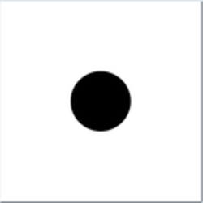 Programa
import CodeWorld main :: IO () main = drawingOf circulo circulo :: Picture circulo = solidCircle 3
- Ejecución en CodeWorld/Haskell: Circulo
Comentario: La función
solidCircle :: Double -> Picture
2.3 Dibujo del plano de coordenas
- Ejemplo: Escribir un programa para pintar el plano de coordenadas.
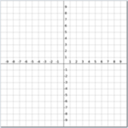 Programa
import CodeWorld main :: IO () main = drawingOf plano plano :: Picture plano = coordinatePlane
- Ejecución en CodeWorld/Haskell: Plano de coordenadas
Comentario: La función
coordinatePlane :: Picture
2.4 Dibujo de rectángulos
- Ejemplo: Escribir un programa para pintar un rectángulo de base 6 y
altura 3.
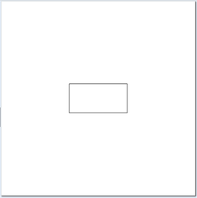 Programa
import CodeWorld main :: IO () main = drawingOf rectangulo rectangulo :: Picture rectangulo = rectangle 6 3
- Ejecución en CodeWorld/Haskell: Rectángulo
- Double -> Double -> Picture=.
- Ejemplo: Modificar el programa anterior para que los lados del rectángulo
tengan una anchura de 0.5.
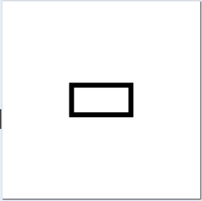 Programa
import CodeWorld main :: IO () main = drawingOf rectangulo rectangulo :: Picture rectangulo = thickRectangle 0.5 6 3
- Ejecución en CodeWorld/Haskell: Rectángulo con anchura
Comentario: La función
thickRectangle :: Double -> Double -> Picture
- Ejemplo: Modificar el programa anterior para pintar un área rectangular
de base 6 y altura 3.
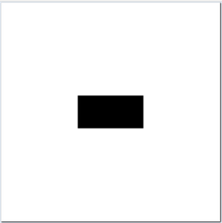 Programa
import CodeWorld main :: IO () main = drawingOf areaRectangular areaRectangular :: Picture areaRectangular = solidRectangle 6 3
- Ejecución en CodeWorld/Haskell: Área rectangular
Comentario: La función
solidRectangle :: Double -> Double -> Picture=.
2.5 Dibujo de caminos
- Ejemplo: Escribir un programa para pintar el camino que pasa por los
puntos (-3,3), (3,3), (-3,-3) y (3,-3).
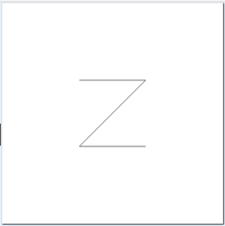 Programa
import CodeWorld main :: IO () main = drawingOf camino camino :: Picture camino = polyline [(-3,3),(3,3),(-3,-3),(3,-3)]
- Ejecución en Codeworld Camino
Comentario: La función
polyline :: [Point] -> Picture
2.6 Dibujo de polígonos
- Ejemplo: Escribir un programa para dibujar el triángulo de vértices
(-9,-9), (0,9) y (9,-9).
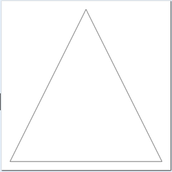 Programa:
import CodeWorld main :: IO () main = drawingOf triangulo triangulo :: Picture triangulo = polygon [(-9,-9),(0,9),(9,-9)]
- Ejecución en CodeWorld/Haskell: Triángulo
- [Point] -> Picture=
2.7 Dibujo de curvas
- Ejemplo: Escribir un programa para dibujar la curva que pasa por los puntos
(-4,8), (0,-8) y (4,8) junto con el plano cartesiano.
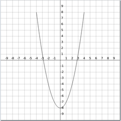 Programa:
import CodeWorld main :: IO () main = drawingOf curvaConEjes curva :: Picture curva = curve [(-4,8),(0,-8),(4,8)] curvaConEjes :: Picture curvaConEjes = curva <> coordinatePlane
- Ejecución en CodeWorld/Haskell: Curva
Comentario: La función
curve :: [Point] -> Picture
- Ejemplo: Modificar el programa anterior para que la curva sea cerrada.
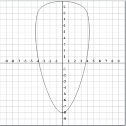 Programa:
import CodeWorld main :: IO () main = drawingOf curvaConEjes curva :: Picture curva = closedCurve [(-4,8),(0,-8),(4,8)] curvaConEjes :: Picture curvaConEjes = curva <> coordinatePlane
- Ejecución en CodeWorld/Haskell: Curva cerrada
Comentario: La función
closedCurve :: [Point] -> Picture
2.8 Otros dibujos elementales
En la documentación de CodeWorld/Haskell
blank :: Picture thickPolyline :: Double -> [Point] -> Picture thickPolygon :: Double -> [Point] -> Picture solidPolygon :: [Point] -> Picture thickCurve :: Double -> [Point] -> Picture thickClosedCurve :: Double -> [Point] -> Picture solidClosedCurve :: [Point] -> Picture thickRectangle :: Double -> Double -> Double -> Picture thickCircle :: Double -> Double -> Picture arc :: Double -> Double -> Double -> Picture sector :: Double -> Double -> Double -> Picture thickArc :: Double -> Double -> Double -> Double -> Picture text :: Text -> Picture
3 Dibujos compuestos
3.1 Dibujos con dos dibujos
- Ejemplo: Escribir un programa para dibujar dos cuadrados de lado 6 y los
centros en (0,0) y (3,3).
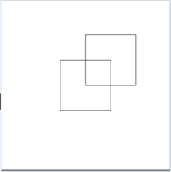 Programa:
import CodeWorld main :: IO () main = drawingOf dosCuadrados dosCuadrados :: Picture dosCuadrados = cuadrado1 <> cuadrado2 cuadrado1, cuadrado2 :: Picture cuadrado1 = polygon [(-3,-3),(-3,3),(3,3),(3,-3)] cuadrado2 = polygon [(0,0),(0,6),(6,6),(6,0)]
- Ejecución en CodeWorld/Haskell: Dos cuadrados
Comentario: La función
(<>) :: Picture -> Picture -> Picture
3.2 Dibujos con varios dibujos
- Ejemplo: Escribir un programa para dibujar tres circunferencias de centro en el
origen y radios 2, 4 y 6.
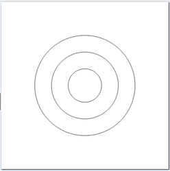 Programa:
import CodeWorld main :: IO () main = drawingOf tresCircunferencias tresCircunferencias :: Picture tresCircunferencias = pictures [circle 2, circle 4, circle 6]
- Ejecución en CodeWorld/Haskell: Tres circunferencias
Comentario: La función
pictures :: [Picture] -> Picture
4 Transformaciones de dibujos
4.1 Traslaciones
- Ejemplo: Escribir un programa para pintar el el dibujo obtenido con 5
traslaciones del círculo unidad.

Programa:
import CodeWorld main :: IO () main = drawingOf circulosTrasladados circulo :: Picture circulo = circle 1 circulosTrasladados :: Picture circulosTrasladados = translated (-4) 0 circulo <> translated (-2) 0 circulo <> translated 0 0 circulo <> translated 2 0 circulo <> translated 4 0 circulo
- Ejecución en CodeWorld/Haskell: Cículos trasladados
Comentario: La función
translated :: Double -> Double -> Picture -> Picture
4.2 Rotaciones
- Ejemplo: Escribir un programa para dibujar el cuadrado de lado 5 girado
45º (es decir, π/4 radianes).
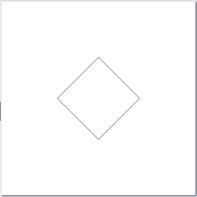 Programa:
import CodeWorld main :: IO () main = drawingOf cuadradoRotado cuadrado :: Picture cuadrado = rectangle 6 6 cuadradoRotado :: Picture cuadradoRotado = rotated (pi/4) cuadrado
- Ejecución en CodeWorld/Haskell: Cuadrado rotado
Comentarios: Las funciones
rotated :: Double -> Picture -> Picture pi :: Double
4.3 Escalamiento
- Ejemplo: Escribir un programa para pintar el siguiente dibujo
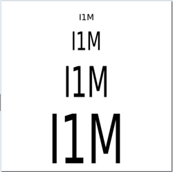 Programa:
{-# LANGUAGE OverloadedStrings #-} import CodeWorld main :: IO () main = drawingOf textosEscalados texto :: Picture texto = lettering "I1M" textosEscalados :: Picture textosEscalados = translated 0 8 texto <> translated 0 5 (scaled 2 3 texto) <> translated 0 0 (scaled 3 5 texto) <> translated 0 (-7) (scaled 5 8 texto)
- Ejecución en CodeWorld/Haskell: Texto escalado
- Comentarios:
La función
scaled :: Double -> Double -> Picture -> Picture
- El pragma
{-# LANGUAGE OverloadedStrings #-}
4.4 Coloreado
- Ejemplo: Escribir un programa para dibujar un cuadrado verde sobre uno
rojo.
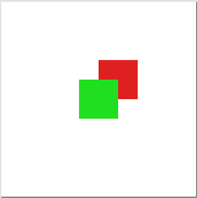 Programa:
import CodeWorld main :: IO () main = drawingOf dosCuadradosColoreados cuadrado :: Picture cuadrado = solidRectangle 4 4 cuadradoRojo :: Picture cuadradoRojo = colored red cuadrado cuadradoVerde :: Picture cuadradoVerde = colored green cuadrado dosCuadradosColoreados :: Picture dosCuadradosColoreados = cuadradoVerde <> translated 2 2 cuadradoRojo
- Ejecución en CodeWorld/Haskell: Dos cuadrados coloreados
Comentario: La función
colored :: Color -> Picture -> Picture
- Ejemplo: Modificar el programa anterior para dibujar el rojo sobre el
verde.
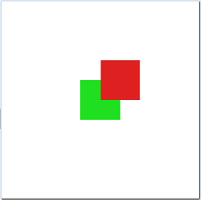 Programa:
import CodeWorld main :: IO () main = drawingOf dosCuadradosColoreados cuadrado :: Picture cuadrado = solidRectangle 4 4 cuadradoRojo :: Picture cuadradoRojo = colored red cuadrado cuadradoVerde :: Picture cuadradoVerde = colored green cuadrado dosCuadradosColoreados :: Picture dosCuadradosColoreados = translated 2 2 cuadradoRojo <> cuadradoVerde
- Ejecución en CodeWorld/Haskell: Dos cuadrados coloreados
- Comentario: capas de dibujos.
5 Programación de dibujos
5.1 Dibujo de un semáforo
- Ejemplo: Escribir un programa para dibujar un semáforo:

Programa:
import CodeWorld main :: IO () main = drawingOf semaforo marco :: Picture marco = rectangle 2.5 7.5 luz :: Color -> Double -> Picture luz c a = colored c (translated 0 a (solidCircle 1)) semaforo :: Picture semaforo = luz red 2.5 <> luz yellow 0 <> luz green (-2.5) <> marco
- Ejecución en CodeWorld/Haskell: Semáforo
5.2 Dibujo de una bandera
- Ejemplo: Escribir un programa para dibujar la siguiente bandera
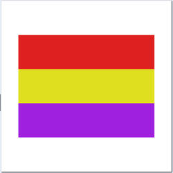 Programa:
import CodeWorld main :: IO() main = drawingOf dibujo dibujo :: Picture dibujo = pictures [ translated 0 4 (rectangulo red) , rectangulo yellow , translated 0 (-4) (rectangulo purple) ] rectangulo :: Color -> Picture rectangulo c = colored c (solidRectangle 16 4)
- Ejecución en CodeWorld/Haskell: Bandera
- Comentario: Pueden servir como ejercicio pintar banderas de la galería de banderas.
6 Animaciones de dibujos
6.1 Rotando un cuadrado
- Ejemplo: Escribir un programa para dibujar un cuadrado girando.
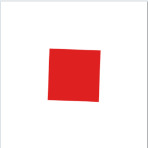 Programa:
import CodeWorld main :: IO () main = animationOf cuadrado cuadrado :: Double -> Picture cuadrado t = rotated t (colored red (solidRectangle 7 7))
- Ejecución en CodeWorld/Haskell: CuadradoGirando
- Comentarios:
La función
animationOf :: (Double -> Picture) -> IO ()=
- La variable
trepresenta el número de segundos desde el comienzo de la ejecución del programa.
6.2 Transladando un círculo
- Ejemplo: Escribir un programa para dibujar un círculo que se mueve
horizontalmente.
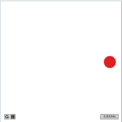 Programa:
import CodeWorld main :: IO () main = animationOf circulo circulo :: Double -> Picture circulo t = translated (9*sin(t-9)) 0 (colored red (solidCircle 1))
- Ejecución en CodeWorld/Haskell: CirculoTrasladado
Comentario: La función
sin :: Double -> Double
6.3 Expandiendo un círculo
- Ejemplo: Escribir un programa para dibujar un cículo que se expande y se
contrae.
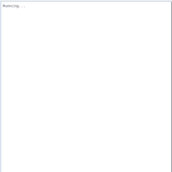 Programa:
import CodeWorld main :: IO () main = animationOf circulo circulo :: Double -> Picture circulo t = colored red (solidCircle (8 * sin t))
- Ejecución en Codeworld CirculoCreciente
6.4 Simulación de un reloj
- Ejemplo: Escribir un programa para simular un reloj y el movimiento del
minutero y del segundero.
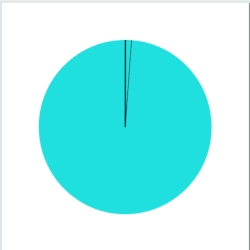 Programa:
import CodeWorld main :: IO () main = animationOf reloj reloj :: Double -> Picture reloj t = pictures [ minutero t, segundero t, fondo] fondo :: Picture fondo = colored yellow (solidCircle 7) minutero :: Double -> Picture minutero t = rotated (-(2*pi/3600)*t) (thickPolyline 0.1 [(0,0), (0,7)]) segundero :: Double -> Picture segundero t = rotated (-(2*pi/60)*t) (polyline[(0,0), (0,7)])
- Ejecución en Codeworld Reloj
6.5 Simulación de una noria de feria
- Ejemplo: Escribir un programa para simular una noria de feria.
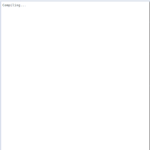 Programa:
import CodeWorld main :: IO () main = animationOf escena escena :: Double -> Picture escena t = ruedaNoria t <> fondo t fondo :: Double -> Picture fondo t = nubeMovida t <> suelo <> cielo suelo :: Picture suelo = colored (light green) (translated 0 (-8) (solidRectangle 20 4)) cielo :: Picture cielo = colored (light blue) (solidRectangle 20 20) nubeMovida :: Double -> Picture nubeMovida t = translated (fromInteger (rem (round (2*t)) 28) - 14) 8 nube nube :: Picture nube = colored white ( translated 0 (-0.4) (solidCircle 1.6) <> translated (-1.2) 0.4 (solidCircle 1.2) <> translated 1 0.2 (solidCircle 1.2)) ruedaNoria :: Double -> Picture ruedaNoria t = parteMovil t <> parteFija parteFija :: Picture parteFija = colored (light gray) (solidPolygon [(-8,-8),(0,-4),(8,-8)]) <> colored (light gray) (solidRectangle 0.4 10) parteMovil :: Double -> Picture parteMovil t = rotated t rueda <> caminoCircular coche ((pi/3) * 0 + t) <> caminoCircular coche ((pi/3) * 1 + t) <> caminoCircular coche ((pi/3) * 2 + t) <> caminoCircular coche ((pi/3) * 3 + t) <> caminoCircular coche ((pi/3) * 4 + t) <> caminoCircular coche ((pi/3) * 5 + t) rueda :: Picture rueda = thickCircle 0.4 6 <> rotated ((pi/6) * 0) radio <> rotated ((pi/6) * 1) radio <> rotated ((pi/6) * 2) radio <> rotated ((pi/6) * 3) radio <> rotated ((pi/6) * 4) radio <> rotated ((pi/6) * 5) radio radio :: Picture radio = solidRectangle 12 0.2 caminoCircular :: Picture -> Double -> Picture caminoCircular d a = rotated a (translated 6 0 (rotated (-a) d)) coche :: Picture coche = translated 0 (-0.5) (solidRectangle 0.2 1.2) <> translated 0 (-1.2) (solidRectangle 1.6 0.8)
- Ejecución en Codeworld Noria
- Comentario: Las funciones
round,remyfromInteger.
7 Material complementario
Este tema también se encuentra como vídeo de clase.